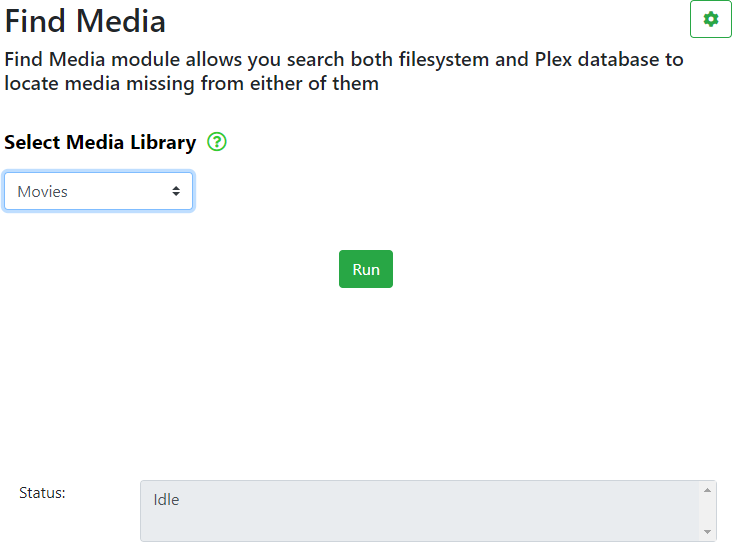

The Find Media module allows you to scan your local folders and compare the list of local files to the list of files held in your Plex Media Server database in order to locate files that may exist locally, but have not been found or included in your Plex Media Server library.
Note: In order to use this module, you must be local to your Plex Media Server media storage device.
Note: The Find Media module does NOT list all files in a library, it will only list missing files. To list all files in a library, use ExportTools instead.
Before entering this module, make sure you have selected a server to work with. Most operations will fail if you have not selected a server.
Please check the Find Media Settings  page and the Global Settings > Library Mapping page to make sure all settings are correct.
page and the Global Settings > Library Mapping page to make sure all settings are correct.

Click on the Select Media Library drop down menu and select the library you wish to work with.
Once the library has been selected above, click on the Run button to find any missing media.
The progress will be displayed in the Status: box.
Note: You may see the message shown below if you have not configured the folder path, go to the Global Settings > Library Mapping page and configure or correct the folder path.

Check the .csv and/or .xlsx file to see the list of missing files. If there are no missing files, then the .csv and/or .xlsx file may be empty.
WebTools-NG is an independent project and is NOT associated with Plex Inc.
Use of this program is at your own risk, no responsibility is taken by WebTools-NG.
Please consider supporting this project 
- All Rights Reserved - WebTools-NG